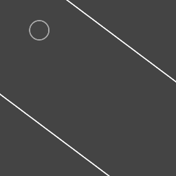

はじめに
反射処理の代表的なものといえば、ブロック崩しですが、ブロック崩しの場合、縦方向あるいは横方向の速度の向きを反転させるだけなので、比較的簡単です。
しかし、角度がついた壁に対して正確に反射させるにはそう単純にはいきません。この場合は、反射ベクトルというテクニックを使う必要があります。

Vecter2クラスのreflectメソッド
- phina.jsのVector2クラスには、反射ベクトルを求めるreflectというメソッドが用意されています。
- reflectメソッドは、入射ベクトルと壁の向きの法線ベクトルから反射ベクトルを求めて返します。
// 線分の法線ベクトル（正規化）
var n = Vector2.normal(p1, p2).normalize();
// 反射ベクトル適用
var r = Vector2.reflect(this.circle.physical.velocity, n);
サンプルコード
phina.globalize();
// メインシーン
phina.define('MainScene', {
superClass: 'DisplayScene',
// コンストラクタ
init: function() {
// 親クラス初期化
this.superInit();
// 背景色
this.backgroundColor = '#444';
// canvas要素描画用
var elem = PlainElement({
width: this.gridX.width,
height: this.gridY.width,
}).addChildTo(this).setPosition(this.gridX.center(), this.gridY.center());
// canvasパラメータ指定
elem.canvas.context.strokeStyle = 'white';
elem.canvas.context.lineWidth = 4;
// 線分配列
this.lines = [
[Vector2(640, 480), Vector2(0, 0)],
[Vector2(0, 0), Vector2(0, 480)],
[Vector2(0, 480), Vector2(640, 960)],
[Vector2(640, 960), Vector2(640, 0)]];
// 線描画
this.lines.each(function(line) {
elem.canvas.drawLine(line[0].x, line[0].y, line[1].x, line[1].y);
});
// 円
var circle = CircleShape({
fill: null,
x: 320,
y: 480,
}).addChildTo(this);
circle.physical.force(-1, -10);
// 参照用
this.circle = circle;
},
// 毎フレーム更新
update: function() {
// 線分に対してループ処理
this.lines.each(function(line) {
// 線の両端
var p1 = line[0];
var p2 = line[1];
// 当たり判定用にVectorクラスの円を作成
var circle = Circle(this.circle.x, this.circle.y, this.circle.radius);
// 円と線分の当たり判定
if (Collision.testCircleLine(circle, p1, p2)) {
// 線分の法線ベクトル（正規化）
var n = Vector2.normal(p1, p2).normalize();
// 線分上の一番近い点
var point = this.nearest(p1, p2, Vector2(circle.x, circle.y));
if (point.equals(p1) || point.equals(p2)) {
}
else {
// めり込まないように補正
this.circle.x = point.x + n.x * circle.radius;
this.circle.y = point.y + n.y * circle.radius;
// 反射ベクトル適用
var r = Vector2.reflect(this.circle.physical.velocity, n);
this.circle.physical.velocity = r;
}
}
}, this);
},
// 点Pに対して線分AB上の最も近い点を返す
nearest: function(A, B, P) {
var a = Vector2.sub(B, A);
var b = Vector2.sub(P, A);
// 内積 ÷ |a|^2
var r = Vector2.dot(a, b) / a.lengthSquared();
if (r <= 0) return A;
if (r >= 1) return B;
return Vector2(A.x + r * a.x, A.y + r * a.y);
},
});
// メイン
phina.main(function() {
var app = GameApp({
startLabel: 'main',
});
app.run();
});